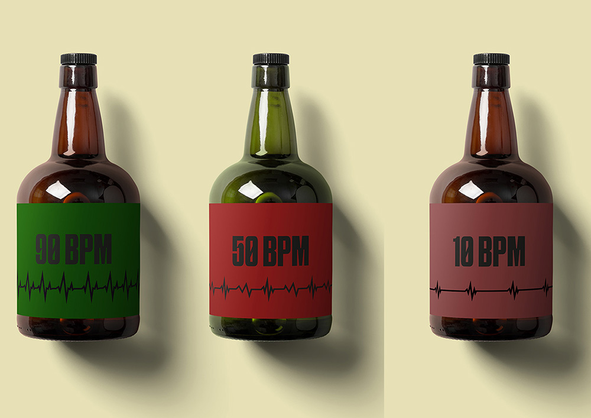
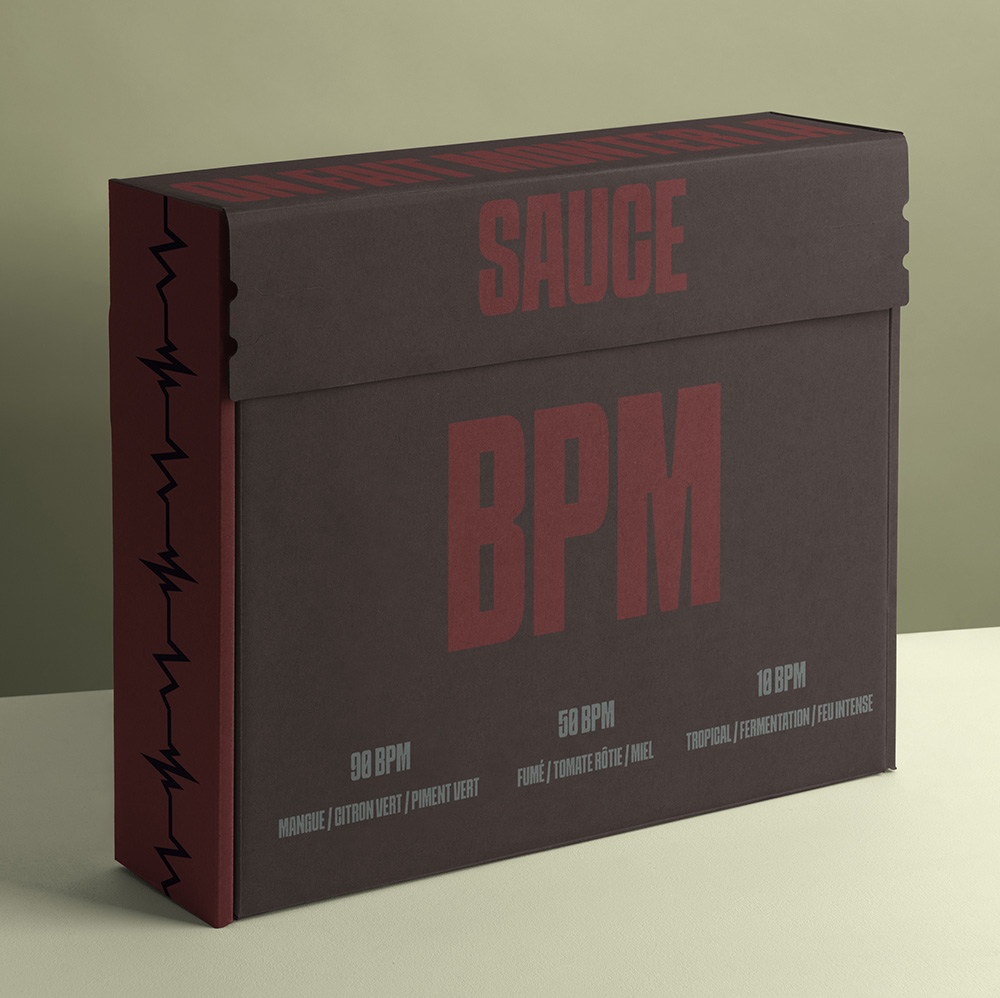
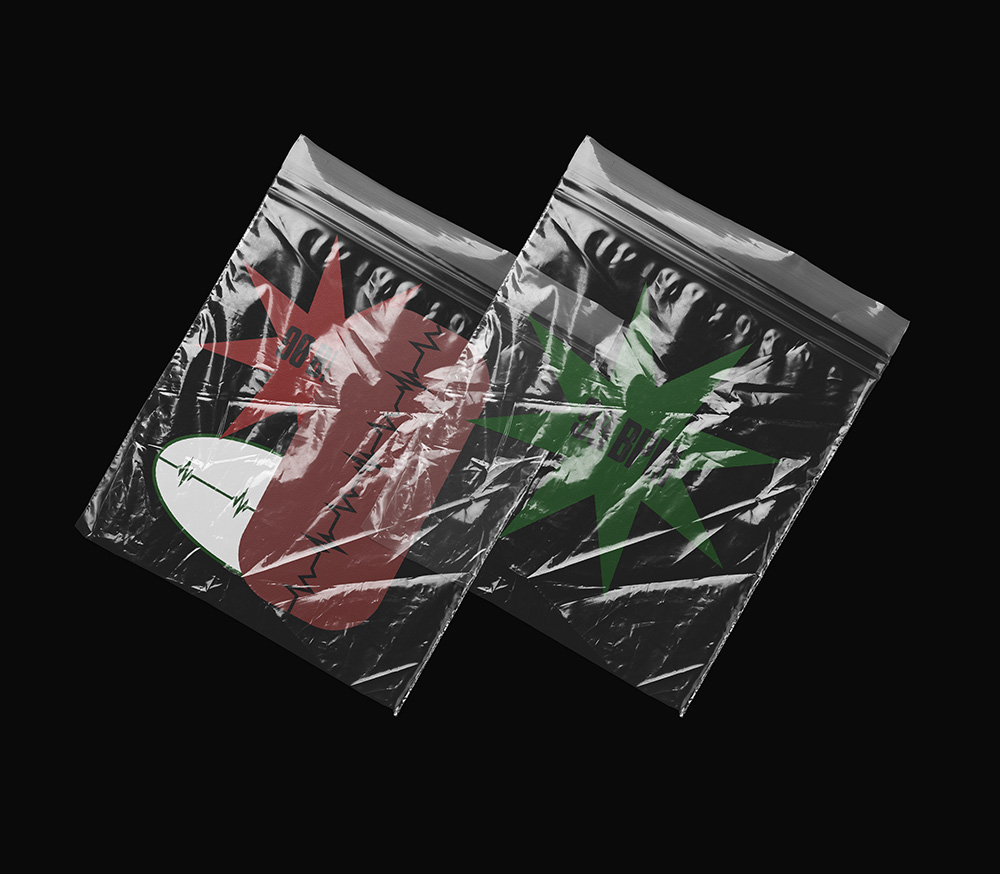

Ce projet fictif consistait à imaginer une nouvelle collection pour Tabasco, avec pour objectif la créa tion de neuf identités visuelles complètes. Chaque proposition explorait une direction créative distincte. Le portfolio présente la version finale, celle qui a été retenue pour une réalisation concrète, illustrant ainsi le résultat d’un processus de recherche et de réalisation
IDENTITÉE VISUELLE
ÇA PIQUE


